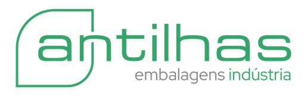

OEE
Ao vivo
Portal de indicadores · Uso interno
Painel de Produção
Acompanhe desempenho, disponibilidade, qualidade e etiquetas de produção em tempo real, direto do Power BI.
OEE
Desempenho
Disponibilidade
Etiquetas
Acessar relatório
Você será redirecionado ao Power BI.
Faça login com sua conta corporativa Microsoft.